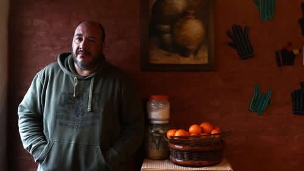

Real Chubut - Agencia de Noticias


A un año de la explosión de la escuela: "Vidal estuvo inhumana"

Durante 20 años fue el compañero de vida de Sandra Calamano, la vicedirectora que murió por una explosión de gas el 2 de agosto de 2018. Y nunca quiso hablar en público. Hasta ahora
Desde el ambiente que hace de cocina, comedor y living se ve el esqueleto de una parra invernal. El perrito trae una pelota de tenis en la boca. "Si jugás con León te va a llenar de barro", avisa Maxi. Lo dice de entrada, mientras mira la tierra arcillosa en la puerta de su casa. El asfalto no llegó a Ceferino Namuncurá al 1500, en el barrio Trujuy de Moreno. Nada de usar zapatillas blancas. Un dibujo pegado con imanes en la heladera dice: "Para tía Sandra".
La tía es Sandra Calamano , la vicedirectora que murió el 2 de agosto de 2018 por una explosión de gas producto de la desidia estatal. Murió también Rubén Rodríguez, el auxiliar que en los ratos libres les enseñaba su oficio de carpintero a los chicos.
El que narra mientras ceba mate delante de unos bizcochos de membrillo es Maximiliano Grah, compañero de Sandra durante 20 años. Lo llaman Maxi, se dedica a la informática y nunca quiso hablar en público. Hasta ahora.
--Aquel 2 de agosto –cuenta Maxi a Página/12-- salí con Sandra y los chicos casi una hora más tarde de lo habitual. Entrarían después a clase. La dejamos a Sandra en el cruce de Castelar a eso de las siete y cuarto. De ahí ella siempre se tomaba uno o dos colectivos hasta su escuela, la 49. Si un colectivo se demoraba ella hacía 18 cuadras caminando. Seguimos hasta Villa Tessei, donde los chicos van al colegio. Como todos los días me fui a casa de mis viejos a trabajar. Ahí hago mis cosas de informática. Todavía estaba en la puerta cuando recibí un llamado desde el celular de una amiga de Sandra. Pero no era la amiga sino otra maestra. "¡Tenés que venir!", me dijo. Le pregunté si había pasado algo. "¡Tenés que venir ahora!" Le volví a preguntar qué había pasado. Varias veces me dijo lo mismo, que fuera, y me cortó.
--Y fuiste.
--Tomé la autopista. Tardé 20 minutos. Rápido. Cuando llegué había mucha gente: vallados, divisiones de bomberos, policías. Me costó atravesar todo para llegar a la puerta. Me atiende el oficial a cargo, le digo quién soy y me responde con esas palabras que jamás se te borrarán de la cabeza por el resto de tus días: "La señora está fallecida". Yo ya intuía algo malo, pero no me esperaba la muerte. Tardé unos segundos en asimilarlo. Sentí que las piernas se me doblaban y comencé a caer, lentamente, como agachándome. Me sujetaron entre dos oficiales, me trajeron una silla y un vaso de agua. Les pregunté cómo había sido. "Una explosión de gas", me soltaron. Mi cabeza era un lavarropas. Recuerdo que no me querían dejar ir, por mi estado. Pensé en voz alta: "Tengo que ir". Quería buscar a mi suegra y a mi cuñada, que eran las más cercanas. Me paré y salí. A mitad de camino me encontré con Eva, la mamá de Sandra, y con su hermana Alejandra. Habían escuchado la explosión y sabían que en la tele hablaban de la escuela 49 y de dos fallecidos.
La escuela 49
En la escuela 55 de Trujuy, muy cerca de la casa actual donde habla Maxi, Sandra cubría primer grado y acompañaba a los chicos también en segundo, para que terminaran de adaptarse a la primaria. Pareja de una docente, Maxi conoce la jerga. Cuenta que "estaba a cargo del bloque pedagógico", o sea primer grado y segundo juntos.
Dejó la 55 el día que rindió concurso para vicedirectora y tomó el cargo en la 49.
En la 49 se murió Sandra el 2 de agosto de 2018. Al día siguiente, en el cementerio de Moreno, sus compañeras y compañeros la pintaron con una docente hiperactiva que incluso iba los sábados. Maxi aclara que Sandra se tomaba muy en serio cada tarea pero que la jornada de los sábados también era trabajo.
--Le propusieron entrar al programa Patios Abiertos, de la provincia de Buenos Aires, para que los chicos pudieran hacer actividades en la escuela los sábados. Entró. También empezó en un programa nacional, Coros y orquestas. Le encantó. Ahí empezó Ludmi a tocar el cello.
Ludmi es Ludmila, la hija de Sandra y Maxi, que aprovecha las vacaciones de invierno para levantarse a las 12. Agustín, el otro hijo, duerme. Ahí anda la cellista, preparándose el desayuno, con la sonrisa más linda de la Argentina. Está sin el instrumento a mano porque justo se le rompió. Sandra hasta empezó a tomar clases en un taller de luthería para arreglar los instrumentos, porque los recursos oficiales eran cada vez más escasos. Carolina, la luthier que le enseñaba, justo ahora se encarga de la compostura. "No sabés cómo te agradezco haberme dejado arreglar el cello de Ludmi", dice Maxi que le dijo Carolina.
--La vicedirección de la escuela, Patios Abiertos, Coros y orquestas, luthería... Una máquina de trabajar.
--Sandra no decía que no. No sabía, no quería o no podía decir que no. Pero al mismo tiempo estaba muy cansada. Después de tantos años y tanta presión, Sandra vivía contracturada y pensaba qué hacer después de jubilarse. Iba a cumplir 50 el 6 de abril de 2020.
--Maxi, ¿no pensás que hay una exigencia social injusta con los docentes? Se les pide que sean apóstoles en vez de trabajadores. Y después se los homenajea como mártires. Pero el destino no es morirse trabajando.
--No, claro. Nadie debe morirse en una escuela. La responsabilidad de lo que pasó arranca, de abajo hacia arriba, del Consejo Escolar, que estaba intervenido por el gobierno provincial, por haber mandado a un gasista no idóneo. No cerró la llave de paso. Pudo haber sido un error humano. Estuvo la tarde anterior y algo hizo mal. Ahora, con el correr de los meses, aparecen hipótesis sobre por qué ocurrió lo que ocurrió. El caño troncal de gas pasaba entre el techo de la planta baja y el piso de arriba. Distribuía el gas hacia abajo y hacia arriba. La pérdida parece que estaba justo ahí. Entonces el gas se filtraba hacia la pared. La escuela no era vieja, tenía solo seis años, pero ya había filtración. Ojalá que ese gasista no trabaje nunca más. ¿Pero qué gano si le dan 20 años de prisión, o de prisión domiciliaria? Justicia es que no vuelva a pasar algo igual. Si fallaron los controles o si su matrícula no le permitía cortar el gas, falló el Consejo Escolar, que estaba intervenido, y falló la intervención de la Dirección de Cultura y Educación.
--El puesto, de rango superior al del resto de los ministros, lo ocupa Gabriel Sánchez Zinny.
--Un día me llamó.
--¿Te llamó?
--Me acuerdo perfecto. El 7 de enero, para desearme felices fiestas. Supongo que alguien le puso en la agenda que tenía que llamarme para fin de año y se le pasó. Me llamó cinco meses y cinco después de la muerte de Sandra.
--¿Y María Eugenia Vidal?
--Vidal estuvo inhumana. No fue capaz de bajar a la escuela. Vidal nunca me llamó. Tampoco a Mabel, la compañera de Rubén.
--¿Sentís bronca?
--Lo que me da bronca la ausencia del Estado. No arregló bien la instalación, no controló al gasista, no estuvo con nosotros después de los fallecimientos. Ni siquiera la señora gobernadora y el señor director de Cultura y Educación fueron a la escuela a interiorizarse y a brindar cierto apoyo. Solo tuve ese llamado frío. La fiscal (María Gabriela) Urrutia dice que hay seis imputados y que esta causa muere acá. Que no va a llegar a un funcionario de la provincia. No sé por qué lo dice. Los abogados sabrán. Igual, mi bronca no es jurídica. Mi bronca es porque ellos ficcionan.
--¿Ellos?
--La señora gobernadora y el encargado de las escuelas. Mi bronca es social. Yo no quería que Sandra se muriera trabajando. Habría querido toda la vida que no sucediera lo que sucedió. Muchas veces me pregunté qué habría sentido yo si a Sandra la hubiera levantado un auto mientras corría una picada. ¿Cuál sería mi sentimiento hoy? No logro llegar a una conclusión. Y vuelvo al gasista y al Estado. El gasista parece que el 1°, el día anterior al fallecimiento, no cerró la llave de gas. Y en un cuarto cerrado y sin ventanas dejó un ventilador funcionando. Claro, el rotor del aparato larga chispas. Había gas filtrando desde el troncal. Se puede haber acumulado. En esos casos la explosión puede producirse en contacto con el oxígeno. ¿Pasó eso cuando Sandra y Rubén abrieron la puerta y entró aire? Puede ser. ¿O fue el rotor? Pienso y pienso pero no me quiero volver loco. Pienso que esa puerta debió haber quedado abierta.
--¿Tenés respuesta?
--Para ese punto sí. Ella siempre cerraba lo que podía, así evitaba cualquier vandalismo. Cuidaba cada cosa de la escuela como si fuera suya. Siempre se preocupaba y ponía el cuerpo. Hasta para la comida. Por eso el día que fallecieron, ella y Rubén estaban temprano en la escuela. Querían que los chicos tuvieran asegurado su desayuno. Lo mismo con las manzanas.
--¿Qué es lo de las manzanas?
--Cuando el proveedor llevaba manzanas que no estaban para comer se las traía acá, hacía dulce y después preparaba tortas para llevarlas a la escuela los sábados. Con nuestra harina y nuestro gas. Y cada vez que llevaba algo o que cocinaba se duplicaba la matrícula del patio. "Seño, ¿el sábado qué comemos?", le preguntaban. Y ella prometía hacer sopa paraguaya si cada uno llevaba un huevo. Que no se entere la gobernadora, pero cuando a los pibes se les colgaba la pelota ella misma se subía al techo. Cuando en el programa Patios se le fue el auxiliar, antes de volver a casa se iba a limpiar los baños para que quedaran bien. Sandra era muy responsable. Extremadamente. Con los horarios ni te cuento. Llegaba 40 minutos antes de su turno. A veces se iba en bicicleta. Nunca le molestó darle tiempo suyo a la escuela. A veces se quedaba después de su hora por un proveedor o por un padre que quería consultarle algo. Volvía a las cuatro de la tarde. Cometía esos excesos...
--Dijiste que vivía contracturada.
--Con unos tremendos dolores de espalda. No hubiese tenido problemas en volver a su grado, porque el cargo original estaba latente y el de vicedirección no era titular. Pero no daba más después de tantos años y tanto esfuerzo.
--¿Qué pensaba hacer de jubilada?
--No sé. Seguro que algo. Repostería, por ahí. Cocinaba unos bombones riquísimos. Podía estar tres o cuatro horas, y los hacía cada vez más complejos. Cocinar era su cable a tierra. Siempre le admiré cómo de la nada una hora después la cocina aparecía con cuatro docenas de empanadas. Siempre iba para adelante. En todo. Como yo estoy operado de la columna no puedo hacer fuerza. Ella hacía fuerza por mí aunque yo le dijera que no. A veces entendía que no debía hacerlo y a veces no. Los domingos se levantaba temprano y nos despertaba a todos. Cuando nos demorábamos se ponía loca. A las ocho de la mañana cortaba el pasto. En verano le llevaba una hora y medio o dos regar sus plantas.
--¿Por placer?
--Le gustaba.
--El placer del deber.
--Algo así. Jamás se tiraba a chanta ni pasaba una licencia trucha. En los últimos tres o cuatro años no debe haber pasado de una falta por año. Y se embroncaba con los que sí lo hacían. Un día llegó con la cara ensangrentada. Se había caído de la bicicleta porque llevaba una bolsa de pelotas para los pibes. Al día siguiente fue a laburar. Tenía su carácter, Sandra.
--¿Cuándo empezó tu relación con Sandra?
--Empezamos a salir en el 98. En las vacaciones de verano. Vacaciones es un decir, porque ella tenía sus cargos en la escuela 55, acá cerca, en Trujuy, y de golpe te decía: "Me tengo que ir a la escuela". En vacaciones pintaban su aula. Con otra amiga compraban un tacho de 20 litros y pintaban dos grados, Primero A y Primero B, poniendo guita de su bolsillo. Yo les hacía los dibujitos en la compu y ellas decoraban y pintaban las letras en las paredes.
--¿Vivían en esta casa, en Trujuy?
--No. En Castelar, en el departamento de un amigo. Le pagábamos los impuestos y no nos cobraba alquiler. Así estuvimos cuatro años, hasta que necesitó el departamento para el hijo. Después nos fuimos a Villa Tessei, al lado de la casa de mis viejos, en condiciones parecidas. Otros cuatro años. Otra vez un hijo que lo necesitaba. Al final pudimos alquilar un duplexito. Después nos mudamos acá. Este lugar donde estamos ahora conversando es la casa paterna de Sandra. Era una prefabricada que el padre fue haciendo de material. Criaba animales. Lechones. Hacía factura de cerdo.
--El campo.
--Casi. Mi suegro era parquista. Fue parquero de Julio Bocca.
Un tipo de campo, Rogelio. Y mi suegra, María Eva, si tiene que levantar una pared lo hace. Aunque también se le da por los animales.
--¿Y Sandra?
--Muy plantera. Sabía cuándo a una planta le gustaba el lugar y cuándo no. Yo no tengo mano verde, como se dice. Las plantas, sin ella, se fueron muriendo.
Fuente; Página 12